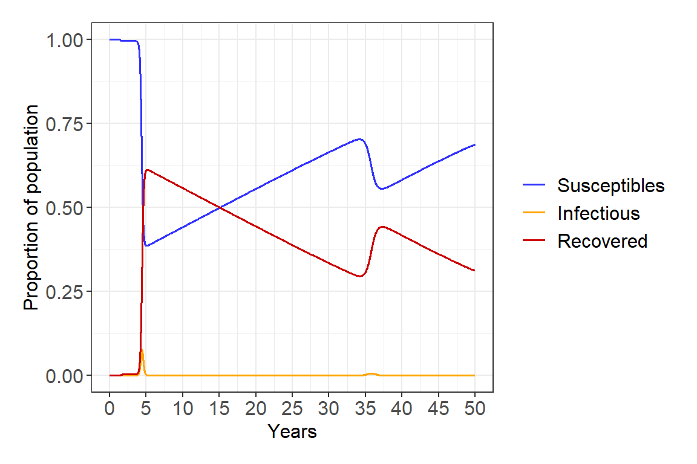
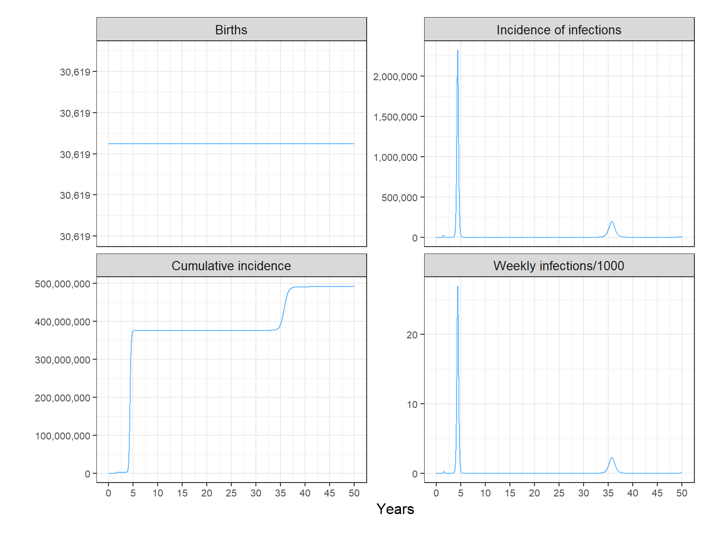
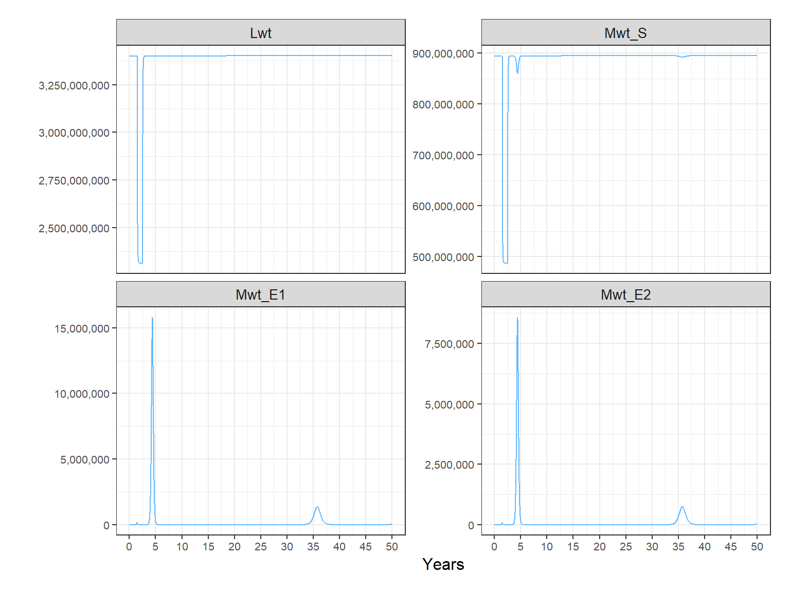
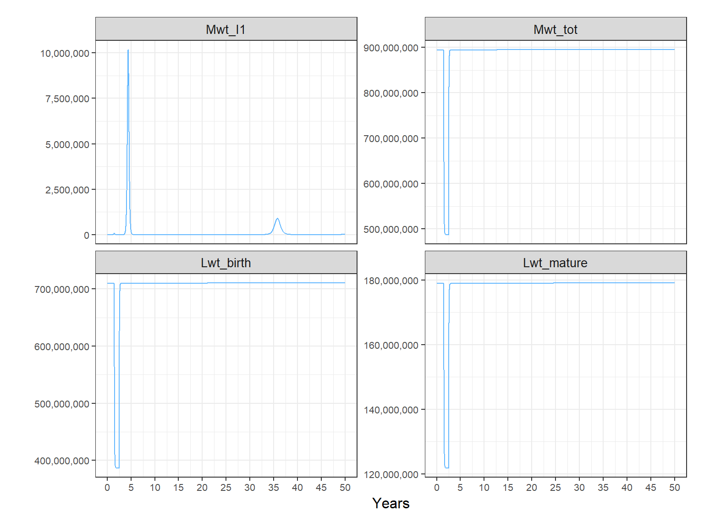
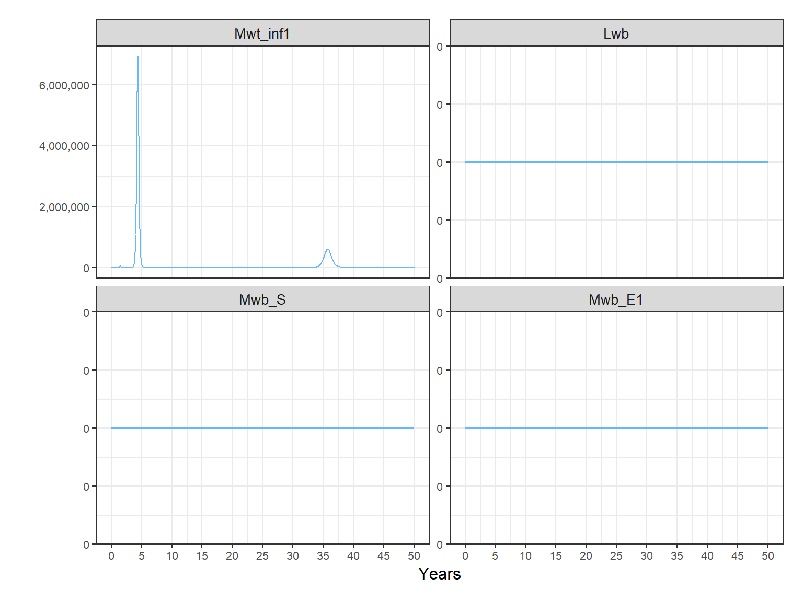
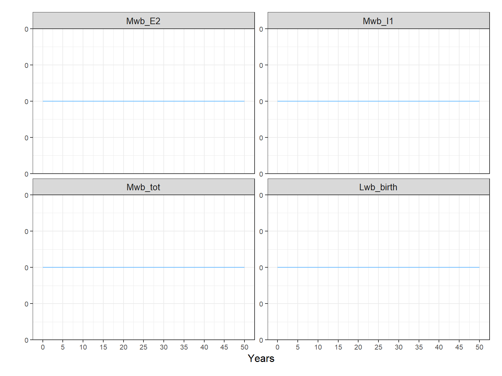
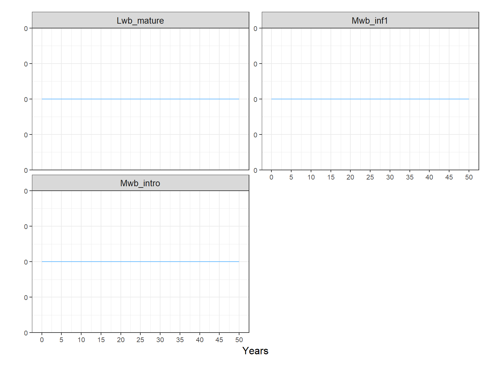
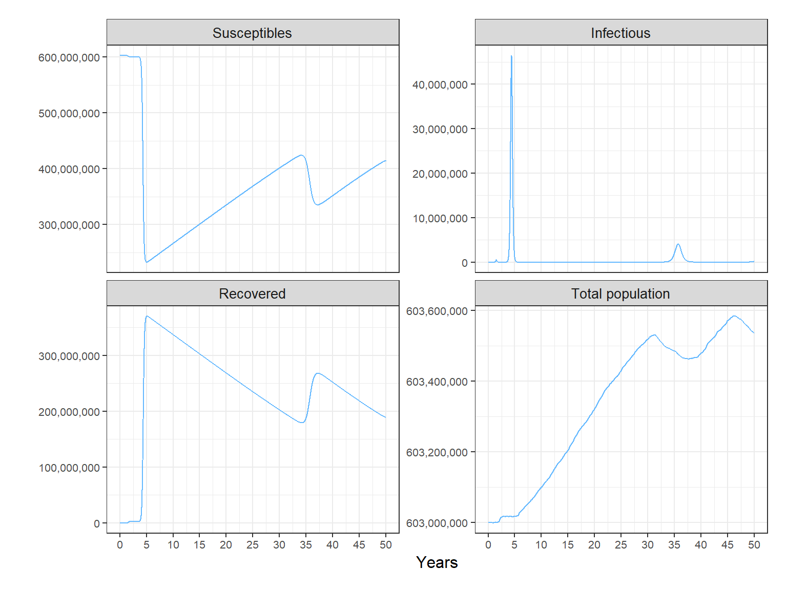

vignettes/customized_model.Rmd
customized_model.Rmdlibrary(ZikaModel)ZikaModel allows the user to change the value of all the model parameters defined in model_param_list_create(). This allows more flexibility in the range of scenarios considered (e.g. inteventions to control the disease). Also, by taking advantage of this feature it is also possible to simulate the transmission dynamics of other immunizing single-strain infections transmitted by Aedes aegypti mosquitoes, such as chikungunya.
Here we will demonstrate how run a customized model which simulates vector control. different diseases and diseasesThis requires to use a different set of functions which will be demonstrated here. There are three parameters which simulate this type of intevention:
Let’s assume that control increases mortality of adults mosquitoes by 20%. For now we will use the default values of TimeMwtControlOn and TimeMwtControlOff, which will simulate control for one year starting on the second year of the simulation. To keep it simple we will assume no effect of seasonality across patches. This is analogous to run the model with only one patch.
age_init <- c(1, 9, 10, 10, 10, 10, 10, 10, 10, 10, 10)
deathrt <- c(1e-10,
1e-10,
1e-10,
0.00277068683332695,
0.0210680857689784,
0.026724997685722,
0.0525354529367476,
0.0668013582441452,
0.119271483740379,
0.279105747097929,
0.390197266957464)
# number of years to run the simulation for
time_years <- 50 # years
# time step
my_dt <- 1
# number of model time steps
time_frame <- (364 * time_years) / my_dt
odin_model_path <- system.file("extdata/odin_model_determ.R", package = "ZikaModel")
propMwtControl <- 0.2
# this returns a function that will generate an instance of the model
create_generator <- create_r_model(odin_model_path = odin_model_path,
agec = age_init,
death = deathrt,
nn_links = nn_links,
amplitudes_phases = amplitudes_phases,
DT = my_dt,
season = FALSE,
propMwtControl = propMwtControl)
#> Equations use index variables i on the rhs outside of an index.
#> The behaviour of this has changed since odin 0.1.3 - see
#> https://github.com/mrc-ide/odin/issues/136 for details.
#> To silence this note, set option `odin.no_check_naked_index` to TRUE
#> This note will disappear in a version after odin 1.0.0
#> vacc_noncov[, 1] <- (if ((TIME >= YL * vacc_child_starttime) && # (line 125)
#> (TIME < YL * vacc_child_stoptime) && # (line 126)
#> (i == vacc_child_age)) (1 - vacc_child_coverage) else 1) * # (line 127)
#> (if ((TIME == vacc_cu_rndtime) && # (line 128)
#> (i >= vacc_cu_minage) && # (line 129)
#> (i <= vacc_cu_maxage)) (1 - vacc_cu_coverage) else 1) # (line 130)
#> vacc_noncov[, 2] <- 1 # (line 132)
# this generates an instance of the model using an initial equilibrium initialisation state
gen <- create_generator$generator(user = create_generator$state)
integer_time_steps <- (364 * time_years) / my_dt
its <- seq(0, integer_time_steps, 1)
# run the model
mod_run <- gen$run(its)
# post processing
model_outputs <- gen$transform_variables(mod_run)Now processing and plotting, as done before:
diagnostics <- post_processing(model_outputs, my_dt)
plot_compartments(diagnostics$compartments)
plot_demographics(diagnostics$demographics)
#> [[1]]#>
#> [[2]]
mosquito_diagnostics <- post_processing_mos(model_outputs)
plot_demographics(mosquito_diagnostics)
#> [[1]]
#>
#> [[2]]
#>
#> [[3]]
#>
#> [[4]]
#>
#> [[5]]
season_vars <- plot_Kc_eip_delta(model_outputs)
grid::grid.draw(season_vars)